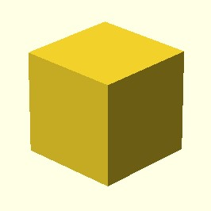

")
cube(size = [5, 10, 2], center = False)
Создает куб. Если значение center равно True, куб центрируется в начале координат. Имена аргументов необязательны, если они указаны в порядке, показанном здесь.
cube(size = [x,y,z], center = True/False)
cube(size = x, center = True/False)
примеры:
cube(size = 10, center = True)
cube(size = [5, 10, 2], center = False)